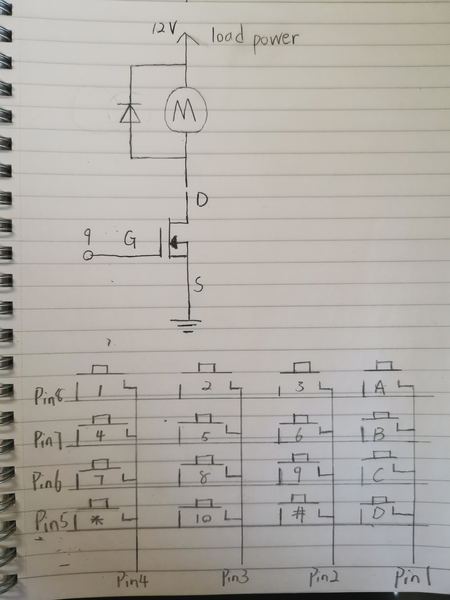
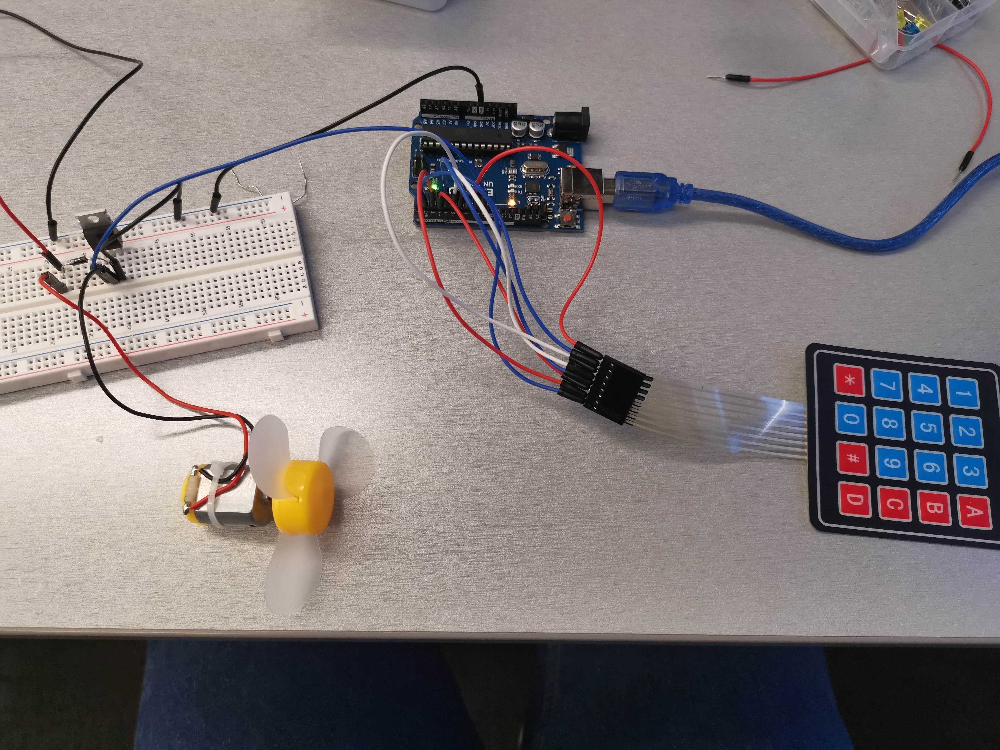

Congyi's Assignment 5!
This assignment contains a schematic, circuit, and code that uses a transistor to control load power separate from logic power. I used analogWrite(), a high-load output device, and an input sensor that uses a library.
Components in the circuit:
1 DC motor
1 Flyback diode
1 Keypad
1 N-MOSFET transistor
Several wires
Schematic:

Calcuation:
Arrcoding to the Motor Datasheet https://www.arduino.cc/documents/datasheets/DCmotor.PDF, the current is 90mA when the operating voltage is 6.0V DC. In my circuit, I used a 12V power which is 2 times 6.0V DC, so the min current can be assumed as 180mA.
The max current would be 3.2A * 2 = 6.4A. The value is much smaller than the drain current of the trasistor (32A). So the circuit is safe to opearte.
The flyback diode was added to aviod sudden voltage spikes.
Circuit:

The circuit was implemented on my breadboard. The keypad is attached to pin 8, 7, 6, 5, 4, 3, 2, 1. The motor is powered by 12V power supply.
The G terminal of the transistor is connected to pin 9. Its D termianl is linked with the moter and the S terminal is connected to the ground.
What's more, the input keys will be printed in the serial monitor to give users a reference.
Firmware:
The program contains one keypad as input and DC motor as output
It will print those input for giving a reference. 2 input keys will count as a new speed for the motor to spin.
With the help of transistor, the system will gradually speed up to reach the set speed and then slow down to 0 speed.
#include
const byte ROWS = 4; //four rows
const byte COLS = 4; //four columns
char keys[ROWS][COLS] = { // set up the rows and columns of the keypad
{'1','2','3','A'}, // the first row is '1','2','3','A'
{'4','5','6','B'}, // the second row is '4','5','6','B'
{'7','8','9','C'}, // the third row is '7','8','9','C'
{'*','0','#','D'} // the fourth row'*','0','#','D'
};
byte rowPins[ROWS] = {8, 7, 6, 5}; //connect to the row pinouts of the keypad
byte colPins[COLS] = {4, 3, 2, 1}; //connect to the column pinouts of the keypad
//Create an object of keypad
Keypad keypad = Keypad( makeKeymap(keys), rowPins, colPins, ROWS, COLS );
int count = 0; // initialize the count number as 0
int speed = 0; // initialize the turning angle as 0
void setup() {
// put your setup code here, to run once:
pinMode(9, OUTPUT); // set pin 9 as an output
Serial.begin(9600); // initialize the serial at 9600 bits per second
}
void loop() {
// put your main code here, to run repeatedly:
char key = keypad.getKey(); // Read the key
// if one key on the keypad is pressed by user
if (key) {
Serial.print("Key Pressed : "); // print "Key Pressed : " in the serial monitor
Serial.println(key); // print the pressed key in the serial monitor
speed = (speed*10) + (key-48); // operate the angle number from ASCII key number to integer and change its unit
count+=1; // increase the count number by one
if (count >= 2) { // if the user input 2 or more than 2 numbers
for (int x = 0; x<= speed; x++){ // increase the motor speed by 1 until it reaches the input speed
analogWrite(9, x); // write the transistor load which leads to change in motor speed
delay(50); // with for the motor to reach the speed
}
for (int x=speed; x>= 0; x--){ // decrease the motor speed by 1 until it reaches 0
analogWrite (9, x);// write the transistor load which leads to change in motor speed
delay(50); // with for the motor to reach the speed
}
count = 0; // Reset the count number to 0
speed = 0; //Reset the turnint angle to 0
}
}
}
Circuit's Operation GIF: